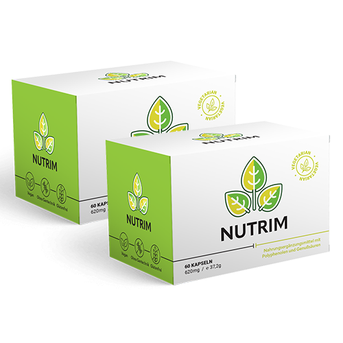

1 KG PRO TAG
- Das ist das Gewicht, das Astronauten im Weltraum mit meiner Methode verlieren … ABER SIE WERDEN VIEL MEHR VERLIEREN!
Schließen Sie sich den 324.295 Menschen an, die mit der Methode „Effektiver abnehmen“ bereits abgenommen haben – und entdecken Sie die schlanke Persönlichkeit, die in Ihnen steckt!

-1 kg
Dag 1-10 kg

-20 kg

-25 kg
-30 kg
Dag 30GARANTIERTER Schlankheitseffekt – 1 kg pro Tag!
Hallo !
Ich bin Sophie Dubois, Professorin und Ernährungsberaterin. molekular. Seit 30 Jahren betreibe ich am California Space Institute (USA) fortgeschrittene Forschung zum schnellen und sicheren Abnehmen. Eine der Studien erwies sich jedoch als echte ENTDECKUNG .
Wir haben eine einfach anzuwendende Methode zur Gewichtsabnahme entdeckt hat schon geholfen 324.295 Menschen haben bereits geholfen, überschüssiges Fett loszuwerden. En het kan jou ook helpen !
Met mijn methode val je MINIMAAL 1 kg per dag af....
-
Das Alter spielt keine Rolle : menschen im alter von 18 bis 95 jahren verlieren gewicht;
-
DIÄTEN UND SPORT VERBOTEN: Diäten und körperliche Bewegung – übermäßige körperliche Anstrengung ist absolut verboten;
-
SCHNELL, SICHER UND EFFEKTIV – OHNE JO-JO-EFFEKT - Die effizienz und sicherheit meiner methode wurde von 38 unabhängigen forschungsinstituten aus der ganzen welt bestätigt.
Ich bestehe darauf, dass 1 kg pro Tag das GARANTIERTE Minimum zum Abnehmen ist. Die meisten Menschen nehmen viel schneller ab – so wie Carmen Rivas, die dank dieser effektiven Methode zur Gewichtsabnahme in nur 21 Tagen 30 Kilo verlor. .
ICH BIN EINE TOLLE MUTTER!
Ich dachte, dass ich nach der Behandlung nie wieder schlank sein würde. Ich heiße Manon. Während der Schwangerschaft habe ich 21 kg zugenommen und nach der Geburt kamen noch einmal 5 kg dazu. Ich wollte eine glückliche und energiegeladene Mutter sein, aber durch das zusätzliche Gewicht fühlte ich mich ständig müde und konnte kaum still sitzen, wenn meine Tochter weinte. Ein Albtraum!
Und das dank der Methode von Professorin Sophie Dubois! Ich habe in 21 Tagen 30 kg abgenommen! Wirklich, als wäre dieses Fett einfach verdampft. Ich muss dazu sagen: Nein, ich habe keine Diät gemacht oder Sport getrieben. Als ob ich dafür Zeit hätte – mit einem 6 Monate alten Baby! Das Einzige, was ich tun musste, war, mir eine einfache Sache zu merken... und dabei abzunehmen, während ich das aß, worauf ich Lust hatte. Jetzt fühle ich mich leicht wie eine Feder – und voller Energie. Es ist einfach unglaublich. Ich bin so glücklich! dat ik mijn dochter eindelijk 100% van mijn kracht kan geven!
Lea Dujardin, 32 Jahre alt
Ergebnisse :
MEIN FORSCHUNGSTEAM HATTE EIN ZIEL
Seit 30 Jahren führen wir Forschungen durch, die Millionen von Dollar gekostet haben, um eine schnelle, effektive und sichere Methode zu finden, mit der Astronauten abnehmen können. Du fragst dich vielleicht: " Warum müssen Astronauten abnehmen?" Es ist eigentlich ganz einfach ...
Fettleibigkeit im Weltraum ist genauso schnell tödlich wie Sauerstoffmangel.
Obwohl Astronauten die Erde in perfektem Zustand verlassen, verwandelt sich ihr Leben in dem Moment, in dem sich die Raketentür schließt, in einen Albtraum. Der Grund?
Stell dir vor, du bist in einer Metallkiste gefangen, die frei im Weltraum schwebt. Es gibt keine Erdanziehungskraft, also kannst du nicht trainieren. Du hast keinen Zugang zu frischem Gemüse – gesundes Essen gibt es nur auf der Erde. Stattdessen isst du verarbeitete Nahrung aus einer Tube und bist zusätzlich gestresst. Das ist ein perfektes Rezept für Übergewicht.
Außerdem werden im Weltraum alle biologischen Prozesse beschleunigt.
Das bedeutet, dass der Körper eines Astronauten bis zu fünfmal schneller an Gewicht zunimmt als auf der Erde.
Außerdem verlaufen Krankheitsprozesse im Weltraum schneller. Und so ist ein Astronaut nach einem Monat Leben in der Raumstation ein menschliches Wrack: mit verstopften Blutgefäßen durch Fett, Krampfadern und einem schwachen Herzen. Dieser Prozess musste gestoppt werden.
Mein Forschungsteam hatte ein Ziel : eine einfache methode zu finden, mit der astronauten im weltraum automatisch unerwünschtes fett verbrennen und loswerden können, KEINE DIÄT UND KEINE ÜBUNGEN ...
Jetzt sehe ich das Leben nur noch in leuchtenden Farben.
"GESUNDES ESSEN“ VERGIFTET ASTRONAUTEN
Durch jahrelange Forschung haben wir verschiedene Methoden getestet, um Fettleibigkeit bei Astronauten zu bekämpfen, aber die meisten erzielten keine wirksamen Ergebnisse.
Mit magnetischen Impulsen versuchen wir, die Muskeln der Astronauten zu stimulieren, um einer Atrophie vorzubeugen. Die Muskeln wachsen, aber das verhindert nicht, dass sich Fett anlagert.
Danach habe ich mit verschiedenen Diäten experimentiert. Wir ernährten die Astronauten mit verschiedenen Mischungen, die meisten basierten auf dem auf der Erde bekannten 'gesunden' Essen – jedoch richtig zubereitet. Die Ergebnisse waren überraschend.
Die Astronauten, an denen wir die ‚gesunden Mischungen‘ getestet haben... nahmen noch schneller zu!
Außerdem reagieren einige Zutaten mit dem Körpergewebe und schädigen es. Infolgedessen zerstörten Astronauten, die einer ‚gesunden Diät‘ folgten, ihre Mägen, Lebern, Nieren und andere Organe.
Wie ich bereits gesagt habe, laufen alle Reaktionen im Weltraum mindestens fünfmal schneller ab als auf der Erde. Das vorherige Experiment zeigt die dramatischen Auswirkungen, die der Verzehr von ‚gesundem Essen‘ haben kann. Auch auf der Erde schädigt sogenannte ‚gesunde Ernährung‘ unseren Körper auf ähnliche Weise – nur langsamer.
Ich habe eine seltsame Verbindung gefunden....
Unser Labor wurde durch... einen glücklichen Zufall gerettet. Zur selben Zeit arbeitete eine andere Forschungsgruppe an den Auswirkungen der Biostimulation im menschlichen Körper.
Meine Forschungskollegen wollten zeigen, dass ein Komplex aus sorgfältig ausgewählten Substanzen die natürliche Regeneration des Organismus fördern kann, sodass geschädigte Zellen im Weltraum schneller wiederhergestellt werden. Die Ergebnisse waren vielversprechend. Doch als ich seine Forschung betrachtete, Ich bemerkte einen seltsamen Zusammenhang: ....
Die Astronauten, die einige Kapseln mit sorgfältig ausgewählten Substanzen zur Beschleunigung der Zellregeneration einnahmen, haben nicht zugenommen!
Sein Gewicht blieb auf einem bestimmten Wert stehen und nahm nicht weiter zu. Das hätte ein großer Durchbruch sein können! Ich habe dieses Biokomplex sofort in meine Forschung aufgenommen.
Die Ergebnisse bestätigten meine Hypothese. Einige sorgfältig ausgewählte Substanzen, die die Stoffwechselprozesse beeinflussen und die Zellregeneration beschleunigen, verhindern die Ansammlung von neuem Fettgewebe. Das könnte eine Lösung für Menschen sein, die gerade erst ins All geflogen sind und noch kein Übergewicht haben. Aber was ist mit den Menschen, die bereits seit Monaten in Raumstationen leben Ein Körper, bedeckt mit 10, 20 oder sogar 30 Kilo unnötigem Fett?
Ich wusste, dass ich weiterarbeiten musste, bis ich eine schnelle, effektive und sichere Methode fand, mit der ALLE Astronauten abnehmen können.
Und dann geschah etwas in meinem Leben, das meine Sicht auf Übergewicht für immer veränderte.
MEINE MUTTER HÄTTE IHR LEBEN DURCH ÜBERGEWICHT VERLIEREN KÖNNEN!
Hat meine liebe Mutter sich dafür entschieden, fettleibig zu sein? Ist sie faul, oder? Bewegt sie sich wenig und isst gerne Süßigkeiten? Nein, nein und nochmals nein.
Meine Mutter verbringt den ganzen Tag damit, durchs Haus zu rennen, zu kochen, zu putzen, einkaufen zu gehen... Untätigkeit ist ihr fremd. Wenn sie nicht da gewesen wäre, wüsste ich nicht, wie ich meine drei Kinder hätte großziehen können.
Die Fakten sind jedoch eindeutig: In den letzten fünf Jahren hat meine Mutter 10 Kilo zugenommen!
Die Produkte, die er verwendete, waren buchstäblich die Ursache dafür "Das Gewicht kam aus dem Nichts."
Der Tag nach Weihnachten wurde für uns zum Albtraum: Meine Mutter erlitt einen Herzinfarkt und wurde ins Krankenhaus eingeliefert. Als ich – nach vielen Stunden des Wartens auf dem Flur – endlich in ihr Zimmer durfte, entdeckte ich meine Mutter weint ...
Besorgt fragte ich, was passiert sei, und meine Mutter erzählte es mir beschämt. Sie gestand, dass der Arzt, der sie untersucht hatte, ihr nicht das Mitgefühl entgegenbrachte, das sie verdient hätte... Ich hatte es ihm auch nicht leicht gemacht!
- Er sagte mir, dass ich, wenn ich nicht so dick wäre, jetzt keine durch Fett verstopften Herzkranzgefäße hätte", flüsterte meine Mutter, während sie ihr Gesicht mit einem Schal bedeckte. "Und dass ich, wenn ich nicht abnehme, jederzeit sterben könnte", fügte sie mit zitternder Stimme hinzu.
Ich war so empört, dass ich zitterte. In einem Anflug von Wut stürmte ich in die Notaufnahme und beschimpfte den Arzt. Als er mich im Flur sah, versteckte er sich sofort.
Kurz fühlte ich mich erleichtert. Aber das änderte nichts an der Tatsache, dass Ich musste einen Weg finden, meine liebe Mutter von dem Albtraum des Übergewichts und den Folgen des Herzinfarkts zu befreien.
Ich wusste, dass ich, wenn ich eine effektive Methode finden könnte, mit der Astronauten abnehmen, auch meiner Mutter helfen könnte.
MEINE MUTTER MACHETE MIR DAS SCHÖNSTE GEBURTSTAGSGESCHENK
Wir arbeiteten mehrere Stunden am Tag. Ich wusste, dass jede Stunde im Labor entscheidend für das Leben meiner Mutter war. Ich hatte keine Zeit, regelmäßig zu essen, und schlief nur fünf Stunden pro Tag. Eines Nachts verlor ich vor Erschöpfung das Bewusstsein und fiel auf den Boden des Labors. Es war ein Wunder, dass ich mir nicht den Kopf am Boden stieß.
Nach und nach verlor ich die Hoffnung, jemals ein zuverlässiges Mittel zu finden, das meine Mutter zu ihrem Idealgewicht zurückbringen würde...
Und dann, an einem Tag im Mai, kam es in meiner Forschung zu einem Durchbruch.
Und dann, an einem Tag im Mai, geschah ein Durchbruch in meinem Leben – in meiner Forschung! Meine Mutter lud mich in mein Lieblingsrestaurant ein, in das sie mich schon mitgenommen hatte, als ich noch ein Kind war, und wir seit vielen Jahren denselben Tisch hatten. Als ich dann dort neben meiner kranken Mutter saß, konnte ich meine Tränen kaum zurückhalten. Ich hatte solche Angst, dass dies mein letzter Geburtstag mit ihr sein könnte.
Bis eine schöne und schlanke japanische Frau den Raum betrat. Das war der Moment, als der geist einer wissenschaftlerin übernahm meine gefühle . Ich erinnerte mich an meine Studienfreundin Yoko, die genauso schön war und... eine ebenso perfekte Figur hatte. Doch wenn wir zusammen unterwegs waren, aß sie jedes Mal deutlich mehr als ich – buchstäblich alles, worauf sie Lust hatte.
Und Yoko ist seither keine Ausnahme Japan hat den niedrigsten Prozentsatz an Frauen mit Fettleibigkeit weltweit.
Deshalb beobachtete ich neugierig, wie eine schöne Fremde das Restaurant betrat und 'Diät'-Essen aß. Dieses Mädchen wog nicht mehr als 55 Kilo und begann ihr Abendessen mit köstlichen italienischen Häppchen: Ciabattabrot mit frischen Tomaten, aromatischen und verführerischen Käsesorten und Würsten. Danach wählte sie die größte Portion Pasta mit Garnelen als Hauptgericht und schließlich, als hätte sie nichts gegessen, bestellte sie Tiramisu als Dessert! Es war einfach unglaublich: Sie aß genauso viel wie meine Freundin Yoko und sah dabei großartig aus.
Ich musste die Lösung für dieses Rätsel finden. Ich hielt mich nicht zurück, ich ging auf sie zu und erzählte ihr - Schatz, du musst mir dein Geheimnis verraten, um so eine unglaubliche Figur zu haben!
Leider sprach sie kein Englisch und ich kein Japanisch... also lächelte sie freundlich und ich blieb ohne Antwort zurück.
ICH MUSSTE IHR GEHEIMNIS ENTHÜLLEN!
Beschleunigt die kosmische Formel den Stoffwechsel und reduziert das Gewicht? Mindestens 1 kg pro Tag?
In der Wissenschaft bekommen wir nie etwas geschenkt. Deshalb habe ich es nicht dabei belassen. Am nächsten Morgen lud ich alle japanischen und asiatischen Mitarbeiter in mein Büro ein, um die Wahrheit herauszufinden, auch wenn diese im Geheimen verborgen war.
9 von 10 Personen, die in mein Büro kamen, waren völlig schlank. Sie schworen mir, dass sie keine spezielle Diät befolgt hatten, sie hatten keinen Sport getrieben, eigentlich gar nichts.
Das Einzige, was die Japaner, die bei der NASA arbeiteten, von ihren europäischen Kollegen unterschied, war, dass sie jeden Tag ihren eigenen Tee tranken – natürlich grünen Tee, genannt Sencha oder Bancha......
ehrlich gesagt, glaubte ich ihnen nicht, aber als ich es überprüfte...
DE GEGEVENS WAS DOORSLUITEND
Nach der Untersuchung der Zusammensetzung traditioneller japanischer Rezepte, mit denen grüner Tee zubereitet wird, entdeckten wir, dass dies die reichste Quelle von Flavonoiden, entgiftenden Substanzen und Stoffen ist, die den Stoffwechsel auf natürliche Weise beschleunigen.
Aktiver Inhaltsstoff:
- Grüner Tee, Vitamin E und B1 (Thiamin)
- Chrom- und Zinkpicolinat
- L-Carnitin, Omega-3-Fettsäuren und Magnesium
- Hydrolysiertes Kollagen
Sie sorgen dafür, dass der Körper schneller arbeitet, mehr Energie verbrennt und Übergewicht abbaut, indem sie die automatische Fettverbrennung im Körper aktivieren.
Dann hatte ich eine Offenbarung und kombinierte regenerative Biotherapie mit den wundersamen Effekten eines japanischen Rezepts zum Abnehmen.
Dies führte zur Entwicklung der weltweit ersten Kapseln. Sie wirken in einer Spirale, um die beiden Phasen des Energieverlusts abzuwechseln. Gewicht:
PHASE I:
Aktivieren
Die therapie reduziert das gewicht, indem sie den stoffwechsel reguliert, beschleunigt und wiederherstellt, der durch giftstoffe und übergewicht verlangsamt wurde, dank zutaten, die auf traditionellen infusionen aus japan basieren;
PHASE II:
Reparatur.
Die von meinen Kollegen entwickelten Biosubstanzen stabilisieren die Effekte der Gewichtsabnahme, da sie die Prozesse der Gewichtsreduktion beschleunigen, die Regeneration und Produktion neuer, umprogrammierter Zellen für einen hohen Stoffwechsel fördern (vergleichbar mit der Technologie, die für Astronauten entwickelt wurde).
Ich wollte, dass meine Formel einfach zu verwenden ist, damit sie auch leicht zu Hause angewendet werden kann (ich dachte an meine Mutter). Also gab ich ihm die Kapsel-Form.
Kapseln werden im Gegensatz zu herkömmlichen Medikamenten im Labor hergestellt. Daher können sie bis zu 30-mal mehr wirksame Stoffe enthalten als herkömmliche Präparate. Das bedeutet, dass die Kapseln wie eine Abnehmbombe wirken.
MUTTER VERLOREN 43 KG IN 35 TAGEN!
Die Astronauten, die nach der Anwendung der Biotherapie im Weltraum bleiben, verlieren genau 1 kg pro Tag.
Ein sehr gutes Ergebnis, alle meine Kollegen gratulierten mir. Allerdings hatte ich erwartet, dass die Biotherapie unter terrestrischen Bedingungen noch schneller wirken würde... und ich wurde nicht enttäuscht.
Als 38 unabhängige Forschungsinstitute die 100% Effektivität und Sicherheit von meiner entdeckung, die zeit, sie meiner mutter zu geben.
Ich sah den zweifel in seinem gesicht, als ich ihm die kapseln überreichte, die von da an nach außen hin normal wirkten.
Mädchen, keine diät, kein mittel, keine übung hat mir geholfen, 'und diese kapseln sollen mir beim abnehmen helfen?' fragte er mit einem lächeln.
Er begann sie jedoch regelmäßig zu nehmen. ein paar tage später rief meine mutter mich an und sagte mit fröhlicher stimme:
- Meine Tochter, du musst es selbst sehen! Ich habe bereits 13 Kilo verloren und alle meine Kleider hängen an mir!
Aber damit endet die Geschichte nicht. Meine Mutter nahm diese Kapseln 35 Tage lang und verlor insgesamt 43 Kilo. Ich war sehr glücklich. Sie stieg aus den Kleidern, die ich trug, als ich jung war, und legte sie in den Schrank.
'Ich habe immer gewusst, dass ich sie brauchen würde“, sagte er mit einem Funkeln in den Augen.
Das Beste ist jedoch, dass die anschließenden Tests dem Arzt... Sie erwiesen sich als vorbildlich! Ich hatte das Gefühl, ein großes Gewicht abgelegt zu haben. Mit einem Lächeln dachte ich, dass meine Mutter beginnen würde, ihre Urenkel zu genießen.
GARANTIERTES Abnehmeffekt: -1 KG PRO TAG
Da wusste ich, dass meine Zeit am Space Institute vorbei war. Ich hatte es satt, daran zu arbeiten, Menschen im Weltraum beim Abnehmen zu helfen, die dort schließlich aus freiem Willen sind. Ich fühlte den Drang, Menschen wie meiner Mutter zu helfen, die gegen Fettleibigkeit und ihre Folgen kämpften, Ohne dass Sie die Schuld an Ihrer Situation tragen .
Ich habe mein eigenes Institut gegründet, organisiert als ein Zentrum für Astronauten. Ich habe all mein Erspartes investiert. Leider war es nicht genug... also nahm ich ein Darlehen auf und... ich setzte mein Haus als Hypothek ein. Alles, damit möglichst viele Menschen von der kosmischen Methode zur Gewichtsreduktion profitieren können, die ich entdeckt habe!
Um am Programm teilzunehmen, war es ausreichend, Übergewicht zu haben. Doch ich erhielt so viele Anfragen, dass ich auswählen musste. Und manchmal war die Wahl sehr schwierig.
Er wollte einen Chefkoch einstellen, um Essen für die Teilnehmer zuzubereiten. Wie ein All-Inclusive-Urlaub. Ich wollte jedoch sicherstellen, dass meine Methode funktioniert IM DIÄT ...
Zunächst konnte ich es jedoch nicht bezahlen. Meine Mutter, die immer eine ausgezeichnete Köchin gewesen ist, bot jedoch an, mir zu helfen... und Essen für die Teilnehmer zuzubereiten!
Nach den ersten drei Monaten, in denen das Zentrum in Betrieb war, erkannte ich, dass ich das Richtige getan hatte.
Nach den ersten drei Monaten, in denen das Zentrum in Betrieb war, wusste ich, dass ich das Richtige getan hatte. Alle Teilnehmer verloren mindestens 1 kg pro Tag. Der Rekordhalter verlor 50 Kilo überschüssiges Fett in 32 Tagen!
Vorausgesetztes Gewicht
Erworbenes Gewicht
Das Diagramm zeigt, dass ALLE Teilnehmer der Studie ihr Ziel für die Gewichtsabnahme erreicht haben und mindestens 1 kg pro Tag verloren haben. Die meisten Teilnehmer verloren schnell mehr Gewicht
DIE WELTRAUMMETHODE VERBRENNt FETT IM GROSSEN MAßSTAB
Das Gewichtsverlustprogramm im Weltraum war ein großer Erfolg. Alle Teilnehmer befreiten sich von unerwünschtem Fett und erreichten ihr Traumgewicht. Wir wollten jedoch etwas mehr. Wir wollten, dass die ganze Welt von der kosmischen Methode zur Gewichtsreduktion profitieren kann, sogar Menschen, die nicht am Programm teilnehmen konnten.
Deshalb habe ich beschlossen, meine Arbeitsweise zugänglich zu machen, damit jeder auf der Welt davon profitieren kann ZUHASE benutzen. Dafür habe ich mein Patent für die Methode zur Gewichtsreduktion beantragt und ich habe es Nutrim Kapseln genannt

Das Geheimnis der Wirkung von Nutrim Kapseln ist eine Kombination aus den neuesten wissenschaftlichen Fortschritten und alter japanischer Volksweisheit. Meine Methode wirkt gleichzeitig auf drei Ebenen.
SEH, WIE EINFACH ES IST
Um 10, 15 oder sogar 30 Kilo abzunehmen, musst du dir nicht deine Lieblingsspeisen verweigern und traurig sein, während deine Lieben Pommes und Pizza genießen. Du musst auch nicht deinen Körper quälen, indem du Sport machst oder Geld für einen Besuch im Fitnessstudio ausgibst.
Um MINDESTENS 1 KG PRO TAG zu verlieren, müssen Sie Nutrim Kapseln nur einmal täglich einnehmen.
Und sieh, wie dein Körper mit jedem Tag, der vergeht, leichter, schlanker und attraktiver wird.
Einige nennen es Magie. Aber du kannst mir glauben: Es ist keine Magie. Es ist eine Methode, die von 38 anerkannten Forschungsinstituten validiert wurde und erfolgreich in Raumfahrtprogrammen eingesetzt wird, um Astronauten beim Abnehmen zu helfen.
EFFEKTIVER GEWICHTSVERLUST IN JEDEM ALTER
Ich bin jemand, der absolut nicht still sitzt. Ich gehe, bestelle ihn hier und arbeite ein wenig im Garten. Mein Mann ist genauso. Aber weil wir beide gerne gut essen, haben wir im Alter ein wenig zugenommen. Wir wissen: Wenn du genauso viel isst wie zuvor, nimmst du dreimal so schnell zu. Und wenn das Gewicht zu hoch ist, wird man schneller müde. Also, immer häufiger, anstatt im Garten zu arbeiten oder spazieren zu gehen, sitzen wir zu Hause vor dem Fernseher.
Wir mussten handeln, also suchte ich im Internet nach Informationen über diese Abnehmmethode. Mein Mann, natürlich, begann zu murmeln, dass er die Kapseln nicht einnehmen wollte, weil die Nachbarn dann sehen würden. Aber ich sagte ihm, wer das tun würde. Sieh mal, es ist schließlich eine sehr diskrete Methode. Das überzeugte ihn, und es war gut, denn er verlor 34 kg. Ich habe 21 kg abgenommen, weil ich es nicht mehr brauchte. Das beschäftigt mich jetzt. Du hast dich selbst davon überzeugt, dass es sich lohnt, auf dich zu hören, Frauen. Ich empfehle es sehr.
Clara und Simon Baert, 71 und 75 Jahre alt
Ergebnisse :
DU GEHST KEIN RISIKO EIN!
Nutrim-Kapseln haben bereits Tausenden von Menschen geholfen, den Kampf gegen Übergewicht zu gewinnen und eine schlanke Figur sowie einen gesunden Körper zu erreichen. Dies ist ein bewähr Durchbruch weltweit, der die prestigeträchtige Dreifache Zufriedenheitsgarantie erhalten hat: Originalität, Qualität und Zufriedenheit.

Garantie für Originalität
Sie können sicher sein, dass Sie ein originales Produkt erhalten, das nur über diese Seite verfügbar ist.

Qualitätsgarantie
Dank des fortschrittlichen Produktionsprozesses entsprechen die Nutrim-Kapseln, die den Stoffwechsel verändern, den höchsten Qualitätsstandards. Alle therapeutischen Zutaten unterliegen umfangreichen Tests, um außergewöhnliche Sicherheit für Ihre Gesundheit zu gewährleisten.

Zufriedenheitsgarantie
Zahlreiche Benutzertests und wissenschaftliche Untersuchungen bestätigen die überlegene Wirksamkeit der Nutrim-Kapseln zur Gewichtsreduktion.
IM DURCHSCHNITT LIEGEN NUR 30 TAGE ZWISCHEN IHNEN UND DER ZAHL IHRER TRÄUME
Lassen Sie sich nicht von anderen erzählen, dass Sie zum Übergewicht verurteilt sind. Weil es in Ihren Genen liegt, oder weil Sie faul sind, oder weil Sie aus irgendeinem Grund Ihre Diät nicht durchhalten können. Das ist alles Unsinn! Jetzt können Sie MINDESTENS 1 KG PRO TAG abnehmen ohne Diäten oder Übungen, kein Jo-Jo-Effekt.
324.295 Menschen haben bereits von meiner Methode der kosmischen Gewichtsreduktion profitiert. Statistiken zeigen, dass es im Durchschnitt 30 Tage dauerte, um die Figur Ihrer Träume zu erreichen. Denk mal darüber nach: 30 Tage, die meist unbemerkt vergehen. Du gehst wahrscheinlich jeden Tag zur Arbeit, kommst nach Hause von der Arbeit und widmest dich deinen täglichen Aktivitäten.
Und diese 30 Tage können dein Leben komplett verändern. Alles, was du tun musst, ist, eine einfache Entscheidung zu treffen.
Ich habe hart daran gearbeitet, die Nutrim-Kapseln zu entwickeln, die den Stoffwechsel anregen und weltweit erhältlich sind. Dank der staatlichen Subvention, die ich erhielt, konnte ich die höchste Qualität der Materialien aufrechterhalten, die in Raumfahrtprogrammen verwendet werden. Wie du dir vorstellen kannst, sind diese Materialien nicht billig.
Leider läuft die staatliche Subvention aus, was bedeutet, dass meine Methode zur Gewichtsreduktion weiterhin zugänglich sein wird, aber leider zu hohen Kosten.
Ich ermutige Sie daher, von diesem Angebot zu profitieren, solange es noch verfügbar ist. Spezielle staatliche Finanzierung für dieses Produkt. Sie können das Produkt ganz einfach bestellen.
Füllen Sie einfach das Formular aus, bezahlen Sie und innerhalb weniger Tage erhalten Sie Ihr diskret verpacktes Paket.Danke für das Lesen des Artikels. Ich hoffe, dass du dich eines Tages daran erinnern wirst, mit einem Lächeln denkend: 'Das war der Tag, der mein Leben verändert hat."
Ich bin sicher, dass du die Ergebnisse großartig finden wirst!
Professor Sophie Dubois


Emma Dupont
Der Artikel hat einen zwiespältigen Eindruck bei mir hinterlassen. Auf der einen Seite sind die Ergebnisse überraschend, aber auf der anderen Seite hat mich diese Medienberichterstattung immer beunruhigt. Hat es schon jemand ausprobiert?